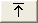

ビュー・ビルダーを使用して、イベント・リストにどの列を表示するかを定義します。
ビューを作成または編集するには、以下のようにします。
- 「列の表示」領域から、以下のように列の追加、削除、位置変更、形式設定を行います。
- 使用可能なフィールド
- このリストには、イベント・リストにまだ追加できるすべての列が表示されます。 このリスト内の列名は、アルファベット順に表示されます。 「使用可能なフィールド」リストは、イベント・リストに追加するために選択した列が含まれている「イベント・リストのビュー」リストに関連して使用されます。
- 以下の表で説明されているボタンを使用して、列を 2 つのリスト間で移動します。
表 1. 列選択ボタン ボタン 説明 
このボタンをクリックして、選択された列を、左方の使用可能なフィールドのリストから、右方のリストへ移動します。 
このボタンをクリックして、すべての列を、左方の使用可能なフィールドのリストから、右方のリストへ移動します。 
このボタンをクリックして、選択された列を、右方のリストから、左方の使用可能なフィールドのリストへ移動します。 
このボタンをクリックして、すべての列を、右方のリストから、左方の使用可能なフィールドのリストへ移動します。 - イベント・リストのビュー
- このリストは、イベント・リスト・ビューに表示されるように選択されたすべての列、およびそれらの列の表示順序を示します。
- 列の順序を変更するには、以下の表で説明されているボタンを使用します。
表 2. 列順序ボタン ボタン 説明 このボタンをクリックして、選択された列を、リストの一番上へ移動して、イベント・リスト内で表示される最初の列にします。 
このボタンをクリックして、選択された列を、リスト内で 1 つ上へ (またはイベント・リスト内で 1 ポジション左方に) 移動します。 
このボタンをクリックして、選択された列を、リスト内で 1 つ下へ (またはイベント・リスト内で 1 ポジション右方に) 移動します。 
このボタンをクリックして、選択された列を、リストの一番下へ移動して、イベント・リスト内で表示される最後の列にします。 - フィールド名/行末揃え
- 「イベント・リストのビュー」リストで列を選択すると、システム定義の列名が「フィールド名」フィールドに読み取り専用値として表示されます。 隣接した「行末揃え」リストから、「左方」、「中心」、または「右方」を選択して、イベント・リスト内の列データの位置合わせを設定します。
- 列の表題
- 「イベント・リストのビュー」リストで選択された列を、システム定義名以外の別タイトルで表示する必要がある場合は、そのタイトルを「列の表題」フィールドに入力します。 隣接した「行末揃え」リストから、「左方」、「中心」、または「右方」を選択して、イベント・リスト内の列タイトルの位置合わせを設定します。
- 列の幅
- イベント・リスト内の列の幅を指定します。
- 「列のソート」領域から、以下のようにイベント・リストの列のソート順とソート優先順位を指定します。
- 使用可能なソート・フィールド
- このリストには、イベント・データのソートに使用できるすべての使用可能な列が表示されます。 このリスト内の列名は、アルファベット順に表示されます。 「使用可能なソート・フィールド」リストは、「ソート順」リストに関連して使用されます。
- 前述の「列選択ボタン」表で説明されたボタンを使用して、列を、2 つのリスト間で移動します。
- ソート順
- このリストは、イベント・データをソートするための列を示します。 このリストを使用して、イベント・データのソート定義を以下のように指定します。
- ソート順を列ごとに定義する。矢印が、リスト内の各列名の左方に表示されます。 デフォルトでは、この矢印は上方向を指し、列がアルファベットの昇順でソートされることを示しています。 降順に変更するには、矢印をダブルクリックします。 ソート方向を変更する場合、選択された列名上で右クリックして、ポップアップ・メニューから「変更」を選択することもできます。
- すべての列に対するソート優先順位を定義する。ソート・リストの最上部のフィールドが、ソート時における最も高い優先順位を持ちます。 リストに 2 番目のフィールドを追加する場合、1 番目のフィールドにいくつかの項目について同じ値が含まれているときは、それらの項目のソートに 2 番目のフィールドが使用されます。 列のソート優先順位を上げる、または下げるには、以下の表で説明されているように、矢印ボタンを使用します。
表 3. 列ソート順ボタン ボタン 説明 このボタンをクリックして、選択された列をリストの一番上へ移動します。 このボタンをクリックして、選択された列をリスト内で 1 つ上へ移動します。 このボタンをクリックして、選択された列をリスト内で 1 つ下へ移動します。 このボタンをクリックして、選択された列をリストの一番下へ移動します。